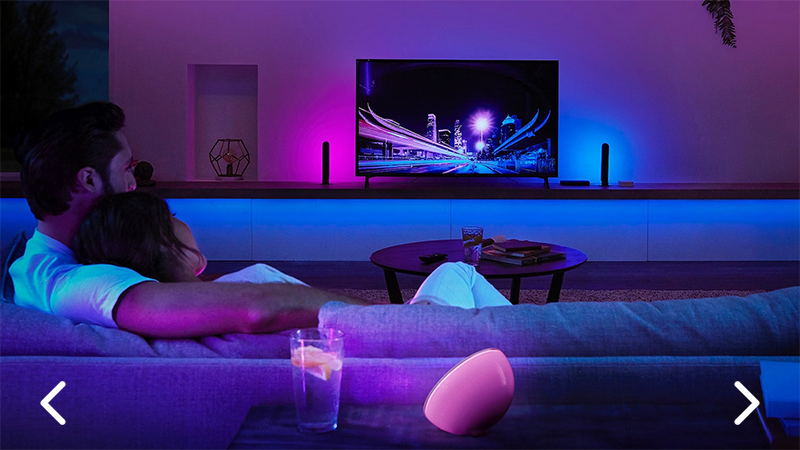

Simple Slide
This is a simple slide carousel that uses CSS to transition between slides.
The carousel can be further enhanced with additional CSS animations—such as fade, zoom, and pan—to make your email more engaging and effective.
Since CSS animations mostly work only in WebKit-based clients, the carousel will be active in iOS Mail (iPhone, iPad), Apple Mail, and Outlook for iOS and Mac.